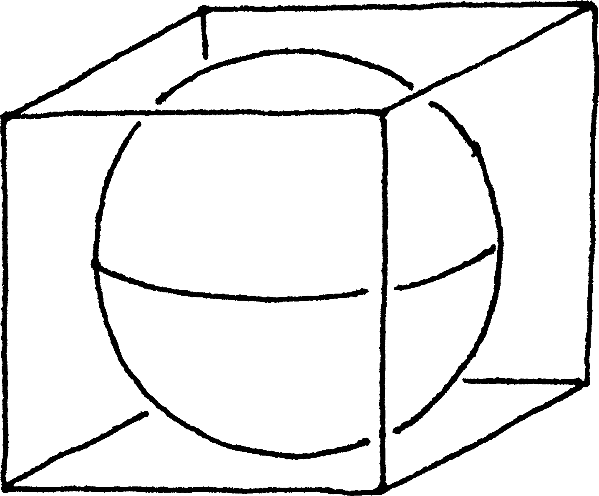
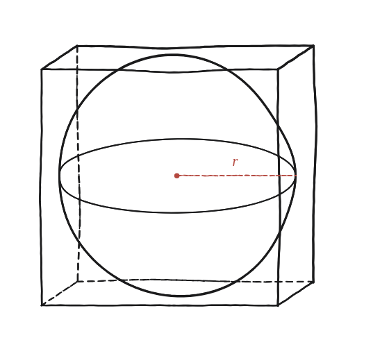

Quina part d'un cub ocupa una esfera? És més de la meitat?

Què hem de produir
Una fracció (o un percentatge), no dues xifres soltes. I una resposta de sí/no a la segona part, justificada per la fracció trobada.
Quina mida té el cub, si l'esfera hi és inscrita
L'esfera toca les sis cares del cub. Si el radi de l'esfera és r, quant fa el costat del cub?

Tancar-ho
Amb el costat del cub igual a 2r, el volum del cub és (2r)³ = 8r³, i el de l'esfera (4/3)πr³. La fracció és (4/3)πr³ / 8r³ = π/6 ≈ 0,5236: hi sobreviu π i res més, com havia de ser, perquè la r s'ha d'anar. I és més de la meitat, perquè π/6 > 1/2 equival a π > 3.
Convé no confondre aquesta fracció amb la de la Qüestió 61, que compara l'esfera amb el cilindre que la conté i dona 2/3 —un número diferent (0,667 contra 0,524), amb un sòlid continent diferent.
Una esfera inscrita en un cub n'ocupa exactament π/6 del volum —aproximadament 0,524, més de la meitat, perquè π > 3.
Comprovació
Amb r=1: cub de costat 2, volum 8. Esfera: (4/3)π ≈ 4,19. Fracció ≈ 0,524 —més de la meitat (π/6 > 1/2 perquè π > 3).